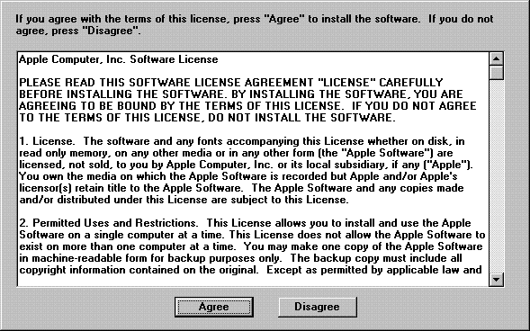
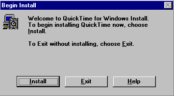
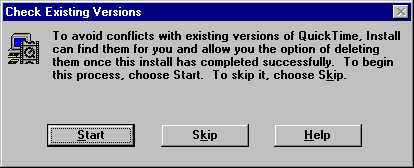
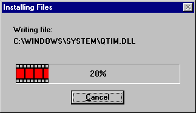
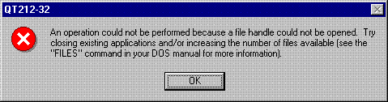
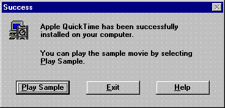
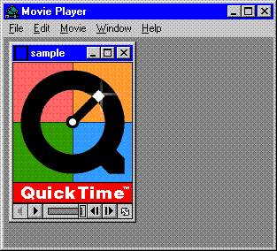

Installation Dialogs ExplainedThe QTW 2.1.2 installer brings up a number of dialogs to help walk you through the installation process. On starting the installer you may receive a message stating that another QuickTime program or library has been detected in memory. It asks if you want to restart Windows. If you do not wish to restart Windows, you can simply go to your Task List, select the QuickTime tasks, and end them. However, this requires quitting the installer and then starting it again once you have ended the tasks. The License Agreement DialogNormally, the first dialog box that appears when running the installer is the License Agreement Dialog. This dialog is new with QTW version 2.1.2. You should read it and click the Agree button to continue with installation. If you select the Disagree button, the installation is canceled. There may be some installations of QTW 2.1.2 that do not include the license agreement dialog. This is because QTW application developers do have the option to remove this dialog.  The Begin Install DialogThe Begin Install dialog is the next to appear when you select Agree from the previous dialog. If you choose the Help button from this dialog box, you will find some helpful setup information. However, there is one clarification that should be made to this information. It states that you must have at least 6 MB of available space on your hard drive. This isn't exactly true. The finished installation will take up 6 MB of disk space. However, the installation process actually requires just over 10 MB of disk space. So, in reality, you need approximately 10.1 MB of disk space available for installation.  The Check Existing Versions DialogWhen you choose the Install button from the Begin Install dialog, a new dialog appears: Check Existing Versions. This dialog gives you the option to check for existing versions of QTW. If you select this option, the installer looks for any files from an earlier installation of QTW and marks them for deletion. The files won't actually be deleted at this time. After the installation is complete, the installer looks for any remaining files marked for deletion that were not overwritten by the new installation, and will delete them at that time. Be aware, however, that the installer won't check directories on read-only volumes, such as CD-ROMS. Also, be aware that the 16-bit installer will only check for existing versions of 16-bit QTW files. Similarly, the 32-bit installer will only check for existing versions of 32-bit QTW files.  It is recommended that you select the Check Existing Versions option to insure a clean install. You select it by clicking on the Start button. If you do not wish to check for existing versions, you must select the Skip button. Assuming that you have decided to check for any existing versions as recommended, you now see a dialog box displaying the directories as they are being checked. Below the directory name are two options that you may select at any time during the checking process:
When a directory is found that contains one or more files from a earlier installation, the checking stops and the dialog notifies you of the directory name and gives you the following options:
When checking is completed (or Skip All was selected), the Complete Install dialog appears. At this point no changes have been made to your system. Remember, files have only been marked for deletion, but not actually deleted. Selecting Exit from this dialog will leave your system untouched. Most likely, you will select Install, which will bring you to the Installing Files dialog. Note: There may be some QTW 2.1.2 installations that do not give users this option of checking existing versions. These installers will automatically check for existing versions with no option for the user to cancel. This is because QTW application developers do have the ability to make this option automatic. The Installing Files DialogThe Installing Files dialog displays a progress bar while the files are being installed. Any existing files with the same name will be overwritten. Once all files are installed, any files marked for deletion that did not get overwritten will be deleted. The progress bar will then hit 100%, which will bring up a small dialog stating Updating INI Files, which tells you that it is updating the WIN.INI and SYSTEM.INI files, as well as the registry as appropriate on Win95 and WinNT.  While the files are installing, the progress bar may be interrupted by the error dialog box displayed below. To resolve this, you should first click the OK button which will cancel the installation. Next, make sure that you don't have the system control panel window open. Do not pay attention to the instructions in the error dialog because it doesn't make sense in this situation. If, after reattempting installation, you still get the error, shut down Windows and reboot the system.  Next, Program Manager pops up as the installer creates a QTW program group for Program Manager. This is followed by the Success dialog which tells you that the installation was successful. It gives you the option to Exit or Play Sample at this point. When you select Play Sample, the Movie Player is launched with the sample movie in an idle state.  To play the movie, you need to choose one of the following three ways to start it:
The movie will loop continuously until you stop it. Choose one of the following three ways to stop the movie:
When you select Play Sample and the Movie Player is launched, it is at that point that your installation is complete. If you select Exit instead of Play Sample, a dialog will appear asking if you are sure you don't want to play the sample movie. When you click Yes, installation is complete. If you click No, the Success dialog reappears so that you again have the option to play the sample movie. The only purpose of playing the sample movie is to verify that the installation was successful.  Control Panel Tips To Customize InstallationThe QuickTime Control Panel is useful to verify your setup. You can also use it to customize your installation. See the Troubleshooting section later in this Note for instances when you may want to modify the QuickTime Control Panel. Here are some QuickTime Control Panel tips: Tip #1Click the Verify Setup button from the QuickTime Control Panel. This will either verify a successful installation with a message No Problems Found, or it will display any missing files designating an unsuccessful installation. Tip #2Don't use the Apply button when you've made modifications to the QuickTime Control Panel. The Apply button will write changes to the QTW.INI file, but will not take effect until after the Control Panel is closed. Therefore, it is better to use the Close button, which asks you if you want to apply your changes if you have, in fact, made changes. When you select Yes, the modifications are actually applied and the Control Panel is closed at the same time. Tip #3Restart Windows after making modifications to the QuickTime Control Panel, especially if you were having problems. This insures that changes will take effect when you next start Movie Player. TroubleshootingThis section contains error messages and problems related to installation and how to resolve them. In general, for most installation problems you should first check the QTW version that is installed. If it is a version earlier that 2.1.2, the software should be upgraded. This will resolve a lot of installation problems. The interactive way to determine the installed version of QuickTime for Windows is to run Movie Player (player.exe in the Windows directory) and click on Help|About Movie Player. Errors During InstallationIf the installer reports an error indicating that it can't write to a file or that the file is being shared by another application, reboot the system. If the installer reports an error during the "modifying .INI files" stage, the problem is that your WIN.INI file is too big. The QTW installer calls Windows' SetProfileString(), which fails if Win.ini is larger than 32KB. This is most likely caused by the file becoming clogged with hundreds of lines of PostScript font declarations or something similar. The workaround is to rename WIN.INI to something else, then install QuickTime for Windows. This creates a new WIN.INI that has just a few lines in it. You can then use a text editor to move those lines to the appropriate sections near the beginning of the big .INI file. Delete the small WIN.INI and rename the big file back to WIN.INI. An Error During Re-InstallSometimes when you do a re-install you may receive an error message saying that the QTINSTAL.EXE file is missing. If you look for this file, you will find that it really is missing! Because this is your executable installer file, you need to re-install from the original installation location (CD-ROM, network server, diskette, etc.) Fixing Audio Break-up ProblemsSome audio cards and drivers use a large amount of CPU time. This can cause break-up of the audio accompanied by poor video performance. The original SoundBlaster Pro, for example, has problems when the total audio data rate exceeds 22050 bytes per second. To improve performance, the audio data rate can be limited by the use of several settings in the QTW Control Panel's More|Audio screen. Here are two ways to limit the rate to 22050:
Audio-Video Synchronization ProblemsQTW 2.1.2 contains an automatic-audio-rate-adjustment feature which was meant to correct audio playback problems on systems that contain an ESS sound chip. While this goal is usually achieved, on some systems undesirable side-effects such as high-pitched sound may occur. The solution to this problem (when it occurs) is as follows:
Encountering DynaLink ErrorsA Dynalink error may occur if, for some reason, there are older versions of QTW files installed. This would only occur in 16-bit QTW. To resolve this problem, you should first try reinstalling QTW 2.1.2, making sure that you select the Check for Existing Versions option during installation. See the Installation Dialogs section of this Note for more details. If the problem still occurs, you are probably running an application from a read-only volume, such as a CD-ROM, which has an older version of QTW on it. Your only option at this point is to uninstall QTW 2.1.2 (see the section Un-installing QuickTime for Windows). Then you can install your application from the CD-ROM which will install the required early version of QTW. Fixing Video Draw ProblemsIf QuickTime for Windows doesn't recognize or falsely recognizes the display board, or if you simply suspect that your problems are related to drawing the Movie image on the screen, you need to change the Video Draw Method. The recommended way to do this is with the QuickTime Control Panel; however, it can also be done by editing the QTW.INI file. To do this from the Control Panel, follow these steps:
Editing the QTW.INI file, however, is not recommended. The reason is that it's easy to get it wrong. The only time you might have to do this is if your video is so messed up that you can't even bring up the Control panel without crashing. In that case, you need to edit the QTW.INI file. To do this by editing the QTW.INI file, add or change the [Video] section of QTW.INI to read:
Note that this is how you fix 16-bit QTW. To fix 32-bit QTW, you change the Section name from [Video] to [Video 32]. If 'Driver' doesn't work, try 'BMP', 'RAW', and 'DIB'. Un-Installing QuickTime for WindowsQuickTime for Windows v. 2.1.2 has an un-installer that works with Windows 95 and Windows NT. It does not work, however, with Windows 3.1. There are several reasons why you may want to uninstall QTW 2.1.2. For example, you may want to free up disk space, or you may need to run an application from a CD-ROM that requires an older version of QTW. You should not un-install QTW to free up memory because, when QTW is not being called, it is not loaded into memory at all and therefore does not use any unnecessary overhead. If you must uninstall QTW 2.1.2 and you're using Windows 3.1, remove all files in the Windows directory and Windows System directory with the date of 8/27/96 and time stamp of 2: 12: 00AM. The only file you do not want to delete is the 2.1.2 installer file, so that you can re-install QTW 2.1.2 in the future. This is the safest way to manually un-install QTW. Follow these steps to manually un-install QTW:
Playing MPEG Videos Through QTW, But Only Under Special ConfigurationsCurrently, there are no known MPEG boards that work with QTW. In the past, the REALmagic MPEG boards did work with QTW; the latest REALmagic boards, however, do not. Those users with old REALmagic boards may be able to play MPEG videos through QTW, but only under the following configuration:
Most users may not have this configuration and, therefore, must play MPEG videos using the application or method provided with their MPEG board. Because there was support for MPEG through QTW in the past, versions of QTW 2.0.0 - 2.1.0 associate .MPG files with the QuickTime Movie Player. This means that when you open a .MPG file, Movie Player will launch and attempt to play the MPEG video. Now that MPEG support for QTW is no longer available, Movie Player will still launch but display a message stating that QuickTime cannot play this video. The problem was fixed in QTW 2.1.1 by removing the .MPG file association. This file association problem in the earlier versions led some hardware manufacturers to ask their customers not to install QuickTime or applications that install QuickTime. These manufacturers are not aware of the fix. Thus, any users concerned about installing QTW because their computer manufacturer recommends against it should feel safe to install QTW 2.1.2 and applications that install QTW 2.1.1 or later. Steps to Insure That an Old Installer Doesn't Associate .MPG Files With QuickTimeIf you are installing an application that installs a version of QTW earlier than version 2.1.1, you should follow the steps below to insure that the old installer doesn't associate .MPG files with QuickTime:
The reason this series of steps works is because when the application's installer attempts to install the older version of QTW in step 3 above, the installer will see that there is already a newer version installed and skip the QTW part of its installation. However, there is a possibility that the application's installer was not written to notice that a newer version of QuickTime was already installed and, as a result, the older version of QTW will be installed. This is what would cause the .MPG file association to be changed in step 4 from what it originally was in step 1. You can then correct the problem by changing the .MPG file association back to what it was and then reinstalling QTW 2.1.2. Variations in Methods for Changing .MPG File AssociationThe method for changing the .MPG file association will vary depending of the version of Windows being used. For Windows 3.1, in the File Manager, you need to select Association from the File menu. For Windows 95, you need to open an explorer window and select Options from the View menu. Then, you click on File Type and edit the file association. Note: If the file association for .MPG files was changed by an earlier installation of QTW, installing QTW 2.1.1 or 2.1.2. will not restore the file association back to what it originally was. Thus, .MPG files will continue to launch QuickTime, even with the new version installed. You need to manually correct the file association using the method described above. If you don't know what the original .MPG file association was, you need to contact your MPEG vendor to get it. SummaryBecause there are many set-up options and other issues to consider when installing QTW, the typical user may encounter problems. The solution to many of the problems is to simply update to QTW 2.1.2, if you have not already. This Note explains the installation process and some of the recommended options that should be selected. It also discusses error messages and other problems that may occur as a result of installation and how to resolve them. ReferencesDownloadables
|